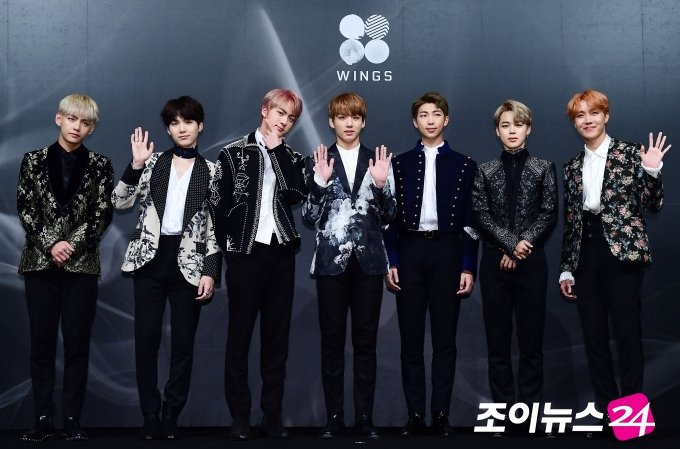
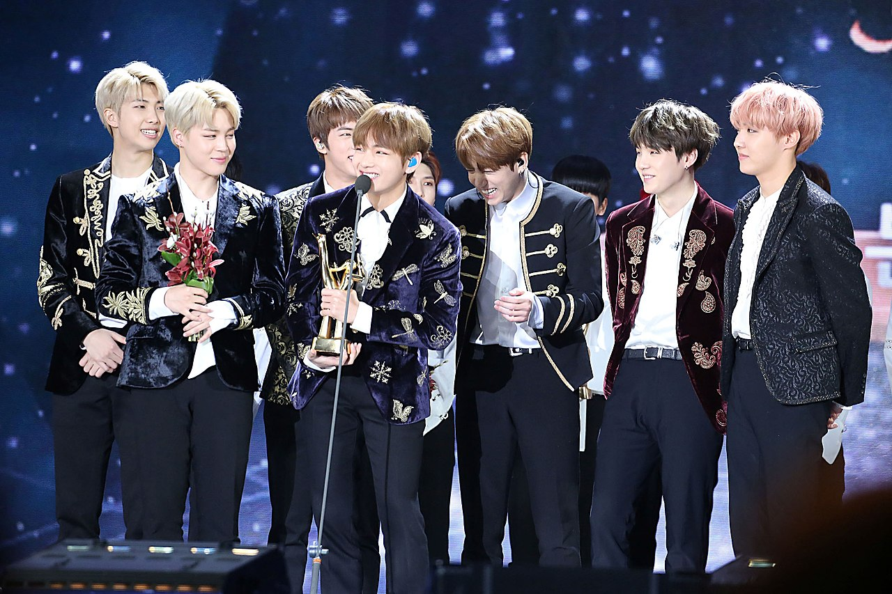
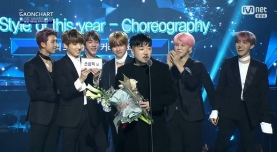
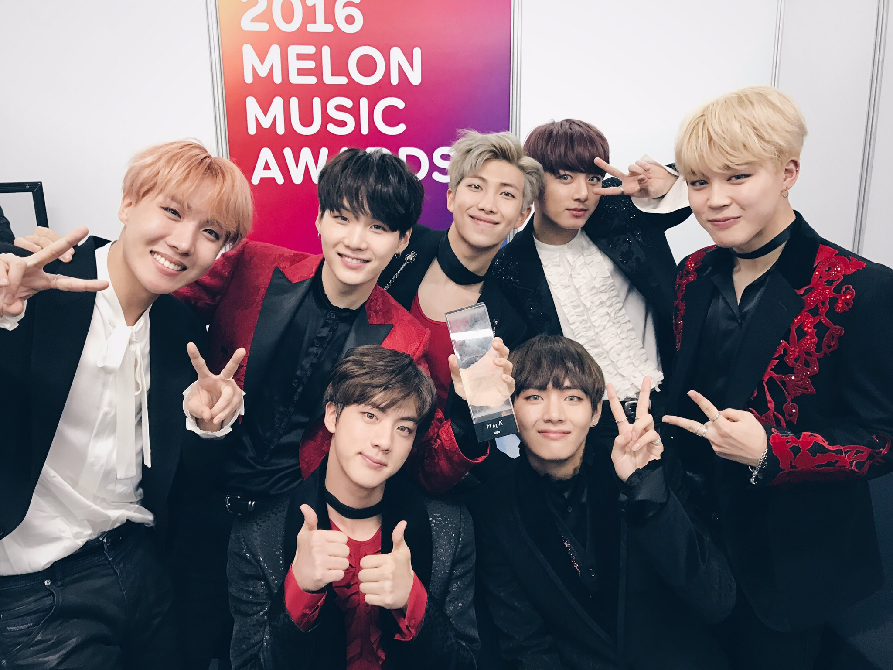

| Logro | Descripción | Enlace |
|---|---|---|
| Billboard 200 | Primera entrada de BTS en el Billboard 200 con el álbum "Wings". |  |
| Golden Disc Awards | Álbum del Año en los Golden Disc Awards 2017. |  |
| Melon Music Awards | Mejor Álbum del Año en los Melon Music Awards 2016. | |
| Gaon Chart Music Awards | Álbum del Año en los Gaon Chart Music Awards 2017. |  |
| MTV Europe Music Awards | Mejor Acto Coreano en los MTV Europe Music Awards 2016. |  |
| Shorty Awards | Mejor Música en los Shorty Awards 2017. |